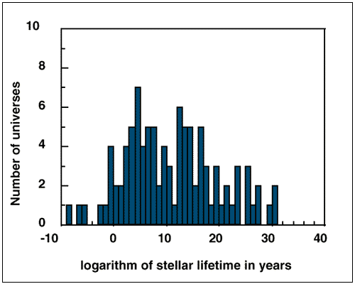

Intelligent Design
Vorschau eines Manuskripts, das für Creation/Evolution eingereicht wurde.
Menschen, Kakerlaken und die Gesetze der Physik
Copyright © 1997 von
Victor J. Stenger
Bitte ohne Genehmigung des Autors nicht nachdrucken.

Andere Links:
|
Evolution ist nicht die ganze Geschichte
Da die Bankrott-Erklärung der Schöpfungswissenschaft zunehmend anerkannt wird, haben diejenigen, die weiterhin versuchen, den Kreationismus in das Schulcurriculum einzuschleusen, einen neuen Slogan übernommen: Intelligent Design (siehe beispielsweise Of Pandas and People, Davis 1993; Matsumura 1995 und Cole 1995 berichten über Versuche, Pandas in Schulen einzuführen). Intelligent Design ist ein subtilerer Begriff als die Schöpfungswissenschaft und hat weitreichendere Implikationen als die Entstehung des Lebens auf einem kleinen Planeten in einer Ecke einer kleinen Galaxie. Die Argumentation, dass das materielle Universum das Ergebnis bewusster Handlung außerhalb von sich selbst sei, kann überzeugend klingen, selbst für diejenigen, die die biologische Evolution als erwiesene Tatsache akzeptieren. Viele, die zustimmen, dass biblische Schöpfung kein angemessener Bestandteil des Schulcurriculums ist, weil sie keine Wissenschaft ist, werden möglicherweise nicht gegen die Aufnahme von Material protestieren, das mit größerer Sophististik argumentiert, dass das Universum als Ganzes Hinweise auf ein Design zeigt.
Ich kann mir vorstellen, dass Befürworter des Intelligent Design Kampagnen für Wissenschaftsunterricht starten, der Aussagen enthält, wie wir sie heute oft in Büchern und der populären Presse lesen: dass moderne Physik und Kosmologie Beweise für Intelligenz in der Struktur des Universums aufgedeckt haben und diese Intelligenz so zu wirken scheint, als habe sie uns im Sinn (Rolston III, 1986; Wright, 1992; Begley, 1994). Tatsächlich hat die Wissenschaft dies nicht getan. Genau wie wir Eltern und Lehrer weiterhin über die Fakten der Evolution aufklären müssen, müssen wir sie auch darüber informieren, dass die Wissenschaft keineswegs die traditionelle Überzeugung bestätigt hat, es gebe ein erschaffenes Universum mit dem Menschen in seiner Mitte.
Tatsächlich deutet die Wissenschaft, wenn überhaupt, auf das genaue Gegenteil hin. Astronomische Beobachtungen belegen weiterhin, dass die Erde nicht mehr bedeutsam ist als ein einzelner Sandkorn auf einem riesigen Strand. Während ein geschaffenes, menschenzentriertes Universum wahrscheinlich niemals vollständig ausgeschlossen werden kann, verlangt nichts aus unserem gegenwärtigen Verständnis von Kosmologie und Physik danach. Darüber hinaus beginnen wir, die möglichen physikalischen Mechanismen für das Entstehen von Materie aus dem Nichts und für die Organisation ohne Design zu verstehen.
Evolutionstheoretiker haben erfolgreich das übliche Argument für ein Design widerlegt, das auf der Komplexität des biologischen Lebens basiert. Sie haben überzeugend gezeigt, dass für jede vernünftige Person, dass eine Komplexität, die für das Leben ausreicht, leicht natürlich im urtümlichen chemischen Brei entstanden sein könnte. Allerdings waren die Prozesse der biologischen Evolution auf der Erde immer noch von der Vorhandensein von Teilchen und „Gesetzen" der Physik vor Milliarden von Jahren abhängig.
Zum Beispiel betrachten wir die Berechnung des Astronomen Fred Hoyle, die oft von Kreationisten zitiert wird, wonach die Wahrscheinlichkeit, dass sich DNA zufällig zusammenfügt, 1040.000 zu eins beträgt (Hoyle, 1981). Dies ist zwar richtig, aber stark irreführend. Die DNA hat sich nicht rein zufällig zusammengefügt. Sie entstand durch eine Kombination aus Zufall und den Gesetzen der Physik.
Ohne die Gesetze der Physik, wie wir sie kennen, wäre das Leben auf der Erde, wie wir es kennen, nicht innerhalb des kurzen Zeitraums von sechs Milliarden Jahren entstanden. Die Kernkraft war notwendig, um Protonen und Neutronen in den Atomkernen zu binden; die Elektromagnetismus war notwendig, um Atome und Moleküle zusammenzuhalten; und die Schwerkraft war notwendig, um die daraus resultierenden Zutaten für das Leben an der Erdoberfläche festzuhalten.
Diese Kräfte mussten innerhalb von Sekunden nach dem Beginn des Urknallens vor 10-15 Milliarden Jahren wirksam gewesen sein, um die Bildung von Protonen und Neutronen aus Quarks und deren Speicherung in stabilen Wasserstoff- und Deuteriumatomen zu ermöglichen. Freie Neutronen zerfallen innerhalb von Minuten. Um über Milliarden von Jahren bestehen zu können, damit sie später mit Protonen zusammen chemische Elemente in Sternen bilden konnten, mussten Neutronen in Deuteronen und anderen leichten Kernen gebunden sein, in denen energetische Bedingungen ihren Zerfall verhinderten.
Die Schwerkraft war notwendig, um Atome zu Sternen zusammenzuführen und sternkern zu komprimieren, wodurch sich die Kerntemperaturen auf zehnmillionen Grad erhöhten. Diese hohen Temperaturen machten Kernreaktionen möglich, und über Milliarden von Jahren wurden die Elemente des chemischen Periodensystems als Nebenprodukt synthetisiert.
Wenn der Kernbrennstoff in den massereicheren, schneller brennenden Sternen aufgebraucht war, forderten die Gesetze der Physik, dass sie als Supernovae explodierten und die Elemente, die in ihren Kernen erzeugt wurden, ins All schickten. Im All konnte die Schwerkraft diese Elemente zu Planeten zusammenfassen, die um die kleineren, langlebigeren Sterne kreisten. Schließlich, nach etwa zehn Milliarden Jahren, konnten der Kohlenstoff, Sauerstoff, Stickstoff und andere Elemente auf einem kleinen Planeten, der sich um einen kleinen, stabilen Stern bewegte, den Prozess der Evolution zu den komplexen Strukturen beginnen, die wir Leben nennen.
In den letzten Jahren haben kreationistische Theologen und sogar einige Physiker die von ihnen als bemerkenswert empfundene Feinabstimmung der grundlegenden Gesetze und Konstanten der Physik stark befördert, ohne die das Leben, wie wir es kennen, niemals hätte entstehen können (Barrow, 1986; Rolston III). Wenn das Universum mit geringfügigen Variationen in der Stärke der fundamentalen Kräfte oder den Massen der Elementarteilchen entstanden wäre, hätte dieses Universum entweder aus reinem Wasserstoff oder aus reinem Helium bestanden. Wederes hätte die spätere Produktion schwerer Elemente, wie Kohlenstoff, die für das Leben notwendig sind, ermöglicht.
Ebenso hätten Sterne nicht lange genug gelebt, um die Elemente des Lebens zu produzieren, wenn die Schwerkraft nicht um viele Größenordnungen schwächer gewesen wäre als die Elektromagnetismus. Lang bevor sie schwere chemische Elemente hätten herstellen können, wären die Sterne kollabiert. Nur die Tatsache, dass die Gravitationskraft um vierzig Größenordnungen schwächer war, hat dies verhindert.
In einer Berechnung, die der von Hoyle ähnelt, hat der Mathematiker Roger Penrose geschätzt, dass die Wahrscheinlichkeit eines Universums mit unserem spezifischen Satz physikalischer Eigenschaften ein Teil von 1010123 beträgt (Penrose 1989: 343). Allerdings können weder Penrose noch jemand anderes sagen, wie viele der anderen möglichen Universen, die sich mit anderen Eigenschaften bildeten, immer noch zu einer irgendeiner Form des Lebens führen könnten. Wenn es die Hälfte sind, dann beträgt die Wahrscheinlichkeit für Leben fünfzig Prozent.
Diesen fehlenden Glied in ihrer Argumentationskette ignorierend, setzen Befürworter des Intelligent Design die sogenannten anthropischen Zufälle als Beweis für ein Universum vor, das mit dem Menschen im Sinn erschaffen wurde. Ich habe den christlichen Philosophen William Lane Craig diese Behauptung in einer Debatte über die Existenz Gottes vortragen hören. In derselben Debatte behauptete Craig, dass das große Alter des Universums, das die menschliche Geschichte in den Schatten stellt, tatsächlich ein Zeichen für Gottes Plan für die Menschheit sei, da Milliarden von Jahren benötigt wurden, um die Evolution des Lebens zu ermöglichen. (Craig nimmt offensichtlich die Evolution an). Man hätte denken können, Gott könnte viel effizienter sein. Und Craig rationalisierte nicht, warum die Menschheit und nicht die Kakerlaken das Ziel war, das Gott im Sinn hatte.
Wie Sie sehen, haben wir nach der Erklärung, wie sich das Leben auf der Erde durch natürliche Prozesse entwickelt hat, noch viel mehr zu erklären. Selbst wenn sich das Leben auf der Erde ohne äußere Einmischung natürlich entwickelt hat, kann die Existenz von Sternen und Planeten, Quarks und Elektronen sowie die Gesetze der Physik selbst als Beleg für ein intelligentes Design des Universums dargestellt werden. Darüber hinaus ist angesichts des Egozentrismus, der die menschliche Rasse zu charakterisieren scheint, es so einfach, Menschen davon zu überzeugen, dass das Universum für sie entworfen wurde, wie es ist, ein Kind davon zu überzeugen, dass Süßigkeiten gut für ihn sind.
Vielleicht wurde das Universum ausschließlich zur Schaffung von Ihnen und mir erschaffen. Ich habe nichts dagegen, diese Möglichkeit zu diskutieren, solange die Diskussion kritisch, rational und objektiv ist. Das am häufigsten von Gläubigen vorgebrachte Argument, wenn sie aufgefordert werden, wissenschaftliche Beweise für einen Schöpfer vorzulegen, lautet: „Wie konnte all das (Gestikulation in Richtung der uns umgebenden Welt) zufällig geschehen?" Wie wir bereits gesehen haben, wird selbst die brillanteste Darstellung des Falls für die Evolution diese Frage nicht beantworten, da sie weiterhin die Voreristenz physikalischer Gesetze und Werte physikalischer Konstanten voraussetzt, die für die Evolution des menschlichen (und der Kakerlaken-) Lebens fein abgestimmt sein mussten.
Das Argument aus der Wahrscheinlichkeit
Bevor ich die Frage beantworte, wie die Gesetze der Physik ohne intelligentes Design zustande gekommen sein könnten, möchte ich zunächst auf die oben dargelegten Wahrscheinlichkeitsargumente eingehen.
Wenn wir gemäß der statistischen Theorie korrekt berechnen, wie wahrscheinlich es ist, dass das Universum mit den Eigenschaften existiert, die es hat, dann ist das Ergebnis Eins! Das Universum existiert mit einer Wahrscheinlichkeit von hundert Prozent (es sei denn, Sie sind ein Idealist, der glaubt, dass alles nur in Ihrem eigenen Geist existiert). Auf der anderen Seite ist die Wahrscheinlichkeit, dass eines einer zufälligen Menge von Universen unser bestimmtes Universum ist, eine andere Frage. Und die Wahrscheinlichkeit, dass eines einer zufälligen Menge von Universen ein Universum ist, das irgendeine Form von Leben unterstützt, ist eine dritte Frage. Ich behaupte, dass es diese letzte Frage ist, die die wichtige ist, und dass wir keinen Grund haben, sicher zu sein, dass diese Wahrscheinlichkeit klein ist.
Ich habe einige Schätzungen der Wahrscheinlichkeit vorgenommen, dass eine zufällige Verteilung physikalischer Konstanten ein Universum mit Eigenschaften hervorbringen kann, die es ermöglichen, dass eine Form des Lebens wahrscheinlich genügend Zeit hatte, sich zu entwickeln. In dieser Studie habe ich die Konstanten der Physik zufällig variiert (ich gehe davon aus, dass dieselben physikalischen Gesetze wie in unserem Universum gelten, da mir keine anderen bekannt sind), über einen Bereich von zehn Größenordnungen um ihre bestehenden Werte. Für jedes resultierende „Spielzeug"-Universum habe ich verschiedene Größen berechnet, wie z. B. die Größe von Atomen und die Lebensdauern von Sternen. Ich fand heraus, dass fast alle Kombinationen physikalischer Konstanten zu Universen führen, obwohl es sich um seltsame handelt, die lange genug leben, damit sich eine gewisse Art von Komplexität bilden kann (Stenger 1995: Kapitel 8). Dies wird in Abbildung 1 veranschaulicht.
|
 Abbildung 1. Verteilung der Sternlebensdauern für 100 zufällige Universen, in denen vier grundlegende physikalische Konstanten (die Massen von Proton und Elektron sowie die Stärken der elektromagnetischen und starken Kräfte) um zehn Größenordnungen um ihre bestehenden Werte in unserem Universum variiert werden. Ansonsten bleiben die Gesetze der Physik unverändert. Beachten Sie, dass in weit mehr als der Hälfte der Universen Sterne mindestens eine Milliarde Jahre leben. Nach Stenger 1995. |
Jedes Mischen eines Kartendecks führt zu einer 52-Karten-Sequenz, die eine geringe a priori-Wahrscheinlichkeit aufweist, aber eine Wahrscheinlichkeit von eins, sobald alle Karten auf dem Tisch liegen. Ähnlich könnte das „Feinabstimmen" der Konstanten der Physik, das als so unwahrscheinlich bezeichnet wird, sehr wohl zufällig gewesen sein; wir befinden uns einfach im Universum, das bei diesem bestimmten Kartenspiel gezogen wurde.
Beachten Sie, dass meine These nicht mehr als ein Universum erfordert, das existiert, obwohl einige kosmologische Theorien dies vorschlagen. Selbst wenn unser das einzige Universum ist und dieses Universum zufällig entstand, haben wir keine Grundlage, um zu schließen, dass ein Universum ohne irgendeine Form von Leben so unwahrscheinlich war, dass es ein Wunder erfordert hätte.
Einfachheit und physikalische Gesetze
Somit scheitert das Argument aus der Wahrscheinlichkeit. Viele Kombinationen physikalischer Konstanten hätten ein Universum mit Leben hervorgebracht, wobei dieses Leben jedoch sehr unähnlich unserem eigenen gewesen wäre. Aber wie verhält es sich mit den Gesetzen der Physik selbst? Können wir deren bloße Existenz als Beleg für ein Intelligent Design betrachten?
Lassen Sie mich mit zwei gesunden Menschenverstand-Annahmen beginnen: (1) man kann etwas aus dem Nichts nicht erschaffen, und (2) die Ordnung des Universums erfordert die Vorhandensein einer aktiven Intelligenz, die die Ordnung vornimmt. Ich überlasse es den Theologen zu erklären, wie das Postulat eines Schöpfergottes das Problem der creatio ex nihilo löst, da Gott etwas ist, das selbst ungeschaffen aus dem Nichts kommen musste. Stattdessen werde ich die physikalischen Fragen ansprechen, die durch die Schaffung des Universums aus dem Nichts impliziert werden. In physikalischen Begriffen scheint die creatio ex nihilo sowohl den ersten als auch den zweiten Hauptsatz der Thermodynamik zu verletzen.
Das erste Gesetz der Thermodynamik ist äquivalent zum Prinzip der Energieerhaltung: Die Gesamtenergie eines geschlossenen Systems ist konstant; jede Energieänderung muss durch einen entsprechenden Zufluss oder Abfluss aus dem System kompensiert werden.
Einstein zeigte, dass Masse und Energie äquivalent sind, gemäß E=mc2. Daher würde die Energieerhaltung scheinbar verletzt, wenn das Universum aus „nichts" entstanden wäre und dabei Materie geschaffen worden wäre. Es scheint, dass Energie von außen erforderlich ist.
Dennoch schätzen wir heute am besten, dass die Gesamtenergie des Universums null ist (innerhalb einer kleinen Nullpunktsenergie, die aus Quantenfluktuationen resultiert), wobei die positive Energie der Materie durch die negative potentielle Energie der Gravitation ausgeglichen wird. Da die Gesamtenergie null ist, war keine Energie erforderlich, um das Universum zu erzeugen, und der erste Hauptsatz wurde nicht verletzt.
Das zweite Hauptsatz der Thermodynamik verlangt, dass die Entropie, oder Unordnung, des Universums mit der Zeit zunehmen oder zumindest konstant bleiben muss. Dies würde darauf hindeuten, dass das Universum ursprünglich in einem höheren Zustand der Ordnung als heute begonnen hat, und so muss es entworfen worden sein.
Dieses Argument gilt jedoch nur für ein Universum mit konstantem Volumen. Die maximale Entropie eines beliebigen Objekts ist die eines Schwarzen Lochs mit demselben Volumen. In einem expandierenden Universum nimmt die maximal zulässige Entropie des Universums kontinuierlich zu, wodurch mit der Zeit immer mehr Raum für die Bildung von Ordnung entsteht. Wenn wir den Urknall auf die frühest definierbare Zeit, die sogenannte Planck-Zeit (10-43 Sekunde), zurückextrapolieren, stellen wir fest, dass das Universum in einem Zustand maximaler Entropie – totaler Chaos – begann. Das Universum besaß zu dem frühest definierbaren Zeitpunkt keine Ordnung. Falls es einen Schöpfer gab, hatte er nichts zu erschaffen.
Beachten Sie auch, dass man nicht fragen, geschweige denn beantworten kann: „Was geschah vor dem Urknall?" Da keine Zeit vor der Planck-Zeit logisch definiert werden kann, ist die gesamte Vorstellung einer Zeit vor dem Urknall bedeutungslos.
Darüber hinaus ist im Rahmen von Einsteins Relativitätstheorie die Zeit die vierte Dimension der Raumzeit. Wenn man diese vierte Dimension als ict definiert, wobei t das ist, was auf einer Uhr steht, i = sqrt(-1) und c die Lichtgeschwindigkeit ist, sind die Koordinaten von Zeit und Raum austauschbar. Kurz gesagt, ist die Zeit untrennbar mit dem Raum verwoben und entstand „wenn" oder „wo" (die Sprache ist hier der Mathematik gegenüber unzureichend) die Raumzeit entstand.
Spontane Ordnung
Woher also stammt die Ordnung des Universums, wenn sie nicht am „Anfang" existierte? Woher stammen die Gesetze der Physik, wenn nicht von einem großen Gesetzgeber? Wir beginnen nun zu begreifen, wie die Gesetze der Physik natürlich zustande gekommen sein könnten, als das Universum im Urknall spontan explodierte.
Um dies zu verstehen, müssen wir zunächst den Vorurteil erkennen, das in das gesamte Konzept des physikalischen Gesetzes eingebaut ist. Als Newton Mechanik und Gravitation entwickelte, war die jüdisch-christliche Vorstellung vom göttlich gegebenen Gesetz bereits tief in seinem Denken durch seine Kultur verankert. Selbst heute wird Wissenschaft von der Öffentlichkeit, den Medien und Wissenschaftlern gleichermaßen als der Prozess des Lernens des „Geistes Gottes" interpretiert.[1]
Dennoch sind die Gesetze der Physik, zumindest in ihren formalen Ausdrucksformen, nicht weniger menschliche Erfindungen als die Gesetze, nach denen wir uns regieren. Sie stellen unsere unvollkommenen Versuche dar, ökonomische und nützliche Beschreibungen der Beobachtungen zu geben, die wir mit unseren Sinnen und Instrumenten machen. Dies soll nicht bedeuten, dass wir subjektiv bestimmen, wie das Universum verhält, oder dass es kein geordnetes Verhalten aufweist. Wenige Wissenschaftler bestreiten, dass eine objektive, geordnete Realität existiert, die unabhängig vom menschlichen Leben und der Erfahrung ist. Wir müssen lediglich erkennen, dass der Begriff des „natürlichen Gesetzes" mit einem bestimmten metaphysischen Ballast behaftet ist, der an unsere traditionellen, vorwissenschaftlichen Denkweisen gebunden ist. Wir gehen einen Schritt über die Logik hinaus, um zu schließen, dass das Bestehen von Ordnung im Universum, die wir konventionell als die Gesetze der Natur bezeichnen, einen kosmischen Gesetzgeber impliziert.
Wir lernen allmählich, dass mehrere Gesetze der Physik, die scheinbar am universellsten und tiefgründigsten sind, in Wahrheit kaum mehr als Aussagen über die Einfachheit der Natur sind, die fast unausgesprochen bleiben können. Die „Gesetze" der Energieerhaltung, Impulserhaltung und Drehimpulserhaltung haben sich als Aussagen über die Homogenität von Raum und Zeit erwiesen. Das erste Hauptsatz der Thermodynamik, die Energieerhaltung, ergibt sich daraus, dass es keinen einzigartigen Zeitpunkt in der Zeit gibt.[2] Die Impulserhaltung folgt aus dem kopernikanischen Prinzip, wonach es keine bevorzugte Position im Raum gibt. Andere Erhaltungssätze, wie die der Ladung und der Nukleonenzahl, entstehen ebenfalls aus analogen Annahmen über Einfachheit.
Für mathematisch Interessierte sind die erhaltenen Größen Generatoren der beteiligten Symmetrietransformationen. Ein homogenes Universum, eines mit einem hohen Symmetrieniveau, ist das einfachste aller möglichen Universen, genau die Art, die wir zufällig erwarten würden. In einem solchen Universum werden viele Erhaltungssätze automatisch bestehen.
Im Allgemeinen bedürfen die Erhaltungssätze keiner Erklärung jenseits der mathematischen Symbole, die den entsprechenden Symmetrien entsprechen. Auf der anderen Seite würde eine beobachtete Verletzung eines Erhaltungssatzes eine Erklärung erfordern, da wir dann Beweise für eine Abweichung von Einfachheit und Homogenität hätten. Um diese Abweichung zu erklären, müssen wir über die Annahmen hinausgehen, die die geringste Anzahl von Parametern erfordern, das heißt, die am wirtschaftlichsten sind.
Mit einem ebenso einfachen, jedoch etwas anderen Argument wird das zweite Gesetz der Thermodynamik nicht als ein grundlegendes Prinzip des Universums gefunden, sondern vielmehr als eine willkürliche Konvention, die wir Menschen treffen, um die Richtung der Zeit zu definieren. Nichts in der bekannten fundamentalen Physik verbietet die Verletzung des zweiten Gesetzes. Kein mechanisches Prinzip verhindert, dass die Luft aus einem Raum entweicht, wenn man die Tür öffnet und alle darin befindlichen Personen tötet. Die Physik verbietet es nicht, dass ein Mensch jünger wird oder die Toten auferstehen! Alles, was für diese „wunderbaren" Ereignisse geschehen muss, ist, dass die beteiligten Moleküle zufällig zur richtigen Zeit in die richtige Richtung bewegen. Natürlich werden diese Wunder außer in Fantasien nicht beobachtet, aber nur, weil sie so unwahrscheinlich sind.
Wir führen das zweite „Gesetz" ein, um zu kodifizieren, wofür alle menschlichen Erfahrungen bezeugen: dass Luft nicht aus einem Raum entweicht, Menschen nicht jünger werden und die Toten nicht auferstehen. Doch diese Ereignisse sind nicht unmöglich, nur höchst unwahrscheinlich. Wie Newton beeinflusst von unserer Kultur, behaupten wir fälschlicherweise, dass diese unwahrscheinlichen Ereignisse nicht eintreten können, weil das zweite Gesetz sie dies „verhindert".
Das zweite Hauptsatz der Thermodynamik, zusammen mit dem Zeitpfeil und den Vorstellungen von Kausalität und Determinismus, entstehen als statistische Aussagen über die Wahrscheinlichkeit von Ereignissen, die sich als Prinzipien entwickeln, die wir erfunden haben, um die Welt unserer alltäglichen Erfahrungen zu beschreiben.
Andere, komplexere und weniger universelle Gesetze der Physik scheinen aus spontan gebrochenen Symmetrien hervorzugehen. Wenn eine Größe wie der Impuls als nicht erhalten beobachtet wird, führen wir den Begriff einer „Kraft" ein, um die entsprechende räumliche Symmetrie zu brechen. Auf diese Weise entstehen die Kraftgesetze und anderen Prinzipien, die dem Universum Struktur verleihen, als spontan gebrochene Symmetrien – zufällige, unbedingte Ereignisse, die in den ersten Sekundenbruchteilen des Urknalls auftraten, als sich das expandierende Universum abkühlte. Der Prozess kann mit der Bildung von Strukturen in einem Schneeflocke aus Wasserdampf oder der Magnetisierung eines Eisenstabs verglichen werden, der unter die Curie-Temperatur abgekühlt wurde.
Das Auftreten von Struktur
Obwohl die Details des hier erwähnten Symmetriebrechungsmechanismus noch nicht vollständig ausgearbeitet sind und weitere Arbeiten dieses Bild möglicherweise widerlegen könnten, haben wir zumindest ein hoch erfolgreiches Beispiel dafür, wie der Prozess der spontanen Strukturbildung aus zugrunde liegender Symmetrie und Chaos zustande kommen kann. Die aktuelle Theorie der Elementarteilchen, das sogenannte Standardmodell der Quarks und Leptonen (das Elektron und das Neutrino sind Beispiele für Leptonen), stimmt mit allen bestehenden Beobachtungen über die materielle Welt überein. In zwei Jahrzehnten seit seiner Einführung wurde keine Verletzung des Standardmodells beobachtet.
Im Rahmen dieses Modells werden die elektromagnetische und die schwache Kernkraft als niederenergetische Manifestationen einer einzigen, vereinheitlichten elektroschwachen Kraft betrachtet, die bei höheren Energien und kleineren Abständen wirkt. Auf der Ebene der meisten Beobachtungen sind diese Kräfte völlig unterschiedlich. Die elektromagnetische Kraft wirkt über makroskopische Distanzen, während die elektroschwache Kraft auf den Atomkern beschränkt ist. Die beiden Kräfte unterscheiden sich enorm in ihrer Stärke. Dennoch behandelt das Standardmodell sie bei hohen Energien in einer vereinheitlichten Weise und erklärt ihre unterschiedliche Struktur durch spontane Symmetriebrechung, die bei niedrigeren Energien auftritt.
Der weitere Fortschritt beim Verständnis dieser grundlegenden Mechanismen wurde durch die Absage des Superconducting Supercollider verlangsamt, der hätte jenseits des Standardmodells erforschen sollen. Ein weniger ehrgeiziges (wenn auch immer noch gigantisches) Projekt läuft in Europa, aber es wird ein neues Jahrtausend dauern, bis Physiker die Daten haben, die sie benötigen, um festzustellen, ob der spontane Symmetriebruch tatsächlich der Prozess ist, durch den sich die Gesetze der Physik in den ersten Sekundenbruchteilen des Urknalls entwickelt haben. Derzeit können wir nur sagen, dass wir ein festes Beispiel und viele theoretische Vorschläge haben, die erst in einem weiteren Jahrzehnt experimentell getestet werden können. Selbst wenn sie alle diese Tests nicht bestehen, scheint es höchst unwahrscheinlich, dass der Prozess Beweise für den Schöpfer der jüdisch-christlich-islamischen Theologie liefert.
Auswirkungen auf die Bildung
Bei der kritischen Prüfung der Evidenz für oder gegen das Intelligent Design des Universums ist zu verstehen, dass wir der traditionellen Praxis der Wissenschaft folgen, indem wir eine wissenschaftliche Erklärung für Beobachtungen über das Universum suchen, die zuvor der Handlung einer übernatürlichen Gottheit zugeschrieben wurden. Gläubige werden uns schimpfliche Namen wie „Atheist" und „säkularer Humanist" geben und uns vorwerfen, Glauben und Moral zu untergraben.
Zweifellos dürfen wir in unserem Ansatz nicht dogmatisch sein oder so tun, als würden wir eine Religion des „Scientismus" predigen. Wenn wir das tun, dann haben wir nicht mehr Recht auf einen Teil des Wissenschaftscurriculums als die Religionsgläubigen.
Wie bei jeder wissenschaftlichen Untersuchung müssen wir unser Engagement für den wissenschaftlichen Prozess betonen und uns darauf einigen, jede Schlussfolgerung dieses Prozesses anzunehmen. Wenn diese Schlussfolgerung Belege für ein übernatürliches Intelligent Design liefert, dann sei es so. Aber wenn wir keine solchen Belege finden, sollten wir uns nicht dazu verpflichtet fühlen, die Empfindlichkeiten von Gläubigen zu beschwichtigen, indem wir die Behauptung unangetastet lassen, dass ihre sektiererischen Vorurteile wissenschaftlichen Wert haben. Wir müssen kraftvoll zur Sprache kommen, sobald jemand wissenschaftliche Autorität für Überzeugungen beansprucht, die den objektiven Tests der wissenschaftlichen Methode nicht standhalten.
Ich bin mir bewusst, dass die in diesem Aufsatz behandelten Ideen im Unterricht sehr schwer zu erklären sein werden, selbst auf Universitätsniveau, wo nur wenige Studierende Physik über ein minimales, beschreibendes Niveau hinaus studieren – wenn sie es überhaupt tun. Dennoch sollten wir das Feld nicht für diejenigen offen lassen, die keine Verpflichtung zur wissenschaftlichen Wahrheit zeigen.
Wenn Lehrer die Entwicklungen in der modernen Physik, die ich oben skizziert habe, nicht verstehen oder erklären können, sollten sie zumindest betonen, dass diese Fragen in offener, objektiver und rationaler Weise weiterverfolgt werden müssen. Sie sollten auf die logischen Mängel im anthropischen Wahrscheinlichkeitsargument hinweisen, wonach alle möglichen Wege gezählt werden müssen, auf denen sich Leben entwickeln könnte. Und sie können die Behauptung in Frage stellen, dass creatio ex nihilo die Gesetze der Physik verletze und dass die Wissenschaft ein Wunder benötige, um das Universum hervorzubringen.
Zumindest sollten Lehrer darauf hingewiesen werden, dass die moderne Physik und Kosmologie keinen Zwang bieten, die uneconomische Hypothese eines biblischen Schöpfers einzuführen. Sie müssen sich denen widersetzen, die versuchen, ihre persönlichen Überzeugungen durch die Hintertür des „Intelligent Design" in den Unterricht einzuschleusen.
Der Prozess, in dem wir uns befinden, ist die Suche nach rationellen Beweisen für oder gegen Intelligent Design. Es genügt nicht zu sagen, dass Intelligent Design möglich ist, und Befürworter von Intelligent Design haben kein Recht, die Frage so umzuformulieren, als müsse die Nichtexistenz von Intelligent Design bewiesen werden. Im Rahmen des Occams Rasiermesser ist Intelligent Design eine zusätzliche Hypothese, und die Last des Beweises liegt beim Befürworter, darzulegen, warum diese Hypothese notwendig ist. Ich habe argumentiert, dass in den Daten oder Theorien der modernen Physik und Kosmologie keine Evidenz oder rationalen Argumente für Intelligent Design zu finden sind. Wenn die Hypothese des Intelligent Design in Schulräumen für Naturwissenschaften diskutiert werden soll, dann fordert eine gute wissenschaftliche Methodik, dass wir klarstellen, dass dies eine uneconomische Hypothese ist, die nicht durch bestehendes wissenschaftliches Wissen erforderlich ist.
Der Autor dankt Taner Edis und John Forester für ihre Kommentare zu diesem Essay.
Victor J. Stenger ist Professor für Physik und Astronomie an der University of Hawaii und Autor von Not By Design: The Origin of the Universe (Prometheus Books, 1988) und Physics and Psychics: The Search for a World Beyond the Senses (Prometheus Books, 1990). Dieser Artikel basiert auf einem Kapitel aus seinem neuesten Buch: The Unconscious Quantum: Metaphysics in Modern Physics and Cosmology (Prometheus Books, 1995).
Referenzen
Barrow, John D. und Frank J. Tipler 1986.
Begley, Sharon 1994. „Science and the Sacred" Newsweek 28. November: 56.
Cole, John 1995. NCSE-Berichte 15, 1:2
Davies, Paul 1992. The Mind of God: The Scientific Basis for a Rational World. New York: Simon and Schuster.
Davis, Percival und Dean H. Keaton 1993. Über Pandas und Menschen. Haughton.
Hawking, Stephen 1988. Eine kurze Geschichte der Zeit: Vom Urknall bis zu Schwarzen Löchern. New York: Bantam.
Hoyle, F. und C. Wickramasinghe 1981. Evolution aus dem Weltraum. J. M. Dent.
Matsumura, Molleen 1995. NCSE Reports 15, 1: 7.
Penrose, Roger 1989. Der neue Geist des Kaisers: Über Computer, Geister und die Gesetze der Physik. Oxford: Oxford University Press.
Rolston III, Holmes 1986. „Geschüttelter Atheismus: Ein Blick auf das fein abgestimmte Universum." The Christian Century, 3. Dezember.
Stenger, Victor J. 1995. The Unconscious Quantum: Metaphysics in Modern Physics and Cosmology. Amherst, N. Y.: Prometheus Books.
Wright, Robert 1992. "Was sagt uns die Wissenschaft über Gott?" Time 28. Dezember: 38.
Anmerkungen
[1] „Das Geist Gottes" waren die letzten Worte von Stephen Hawkings bemerkenswertem Bestseller, A Brief History of Time (Hawking, 1988). Dieser eingängige Ausdruck wurde von Paul Davies für den Titel seines Buches The Mind of God: The Scientific Basis for a Rational World (Davies, 1992) übernommen. Der Physiker Davies hat einen Millionendollar-Preis für seine Schriften über Religion und Wissenschaft gewonnen.
[2] Zugegeben, der erste Moment des Universums war einzigartig, aber die implizierte Verletzung der Energieerhaltung ist genau das, was uns die im Text zuvor erwähnte Nullpunktsenergie liefert.